VOS COMPÉTENCES, 12 JOURS À LA FOIS
1. Mission & Vision
Mission : Permettre à chacun d’acquérir rapidement et de manière concrète des compétences clés du quotidien, sans passer par des formations longues ou des lectures trop théoriques.
Vision : Devenir la plateforme de référence pour un apprentissage “hands-on” et ludique, adapté au rythme de chacun.
2. Public cible
- Apprenants autonomes à la recherche de résultats rapides.
- Professionnels souhaitant développer des soft skills (communication, leadership, gestion du stress…).
- Passionnés de disciplines variées : musique, programmation, développement personnel, etc.
3. Concept clé : l’approche 12 jours
- 12 missions quotidiennes concentrées sur l’essentiel
- Progression étape par étape, sans surcharge théorique
- Flexibilité totale : chaque utilisateur avance à son propre rythme, quand il le souhaite
4. Fonctionnalités phares
- Modules thématiques : communication, musique, code, développement personnel…
- Tests QCM intégrés : scoring automatique pour mesurer l’évolution
- Gratuité & Sécurité : accès libre, hébergement sécurisé (SSL, backups, RGPD-friendly)
5. Valeur ajoutée
| Ce que vous cherchez… | Ce que Mofagicar vous offre |
|---|---|
| Rapidité d’apprentissage | Modules de 12 jours, objectifs clairs |
| Mesure concrète de vos progrès | QCM avec points de mesure de performance |
| Flexibilité | Disponible 24/7, accessible sur mobile |
| Zéro barrière financière | 100 % gratuit, sans abonnement |
COMMENT SE PRESENTENT NOS FORMATIONS ?
1. Architecture du parcours
- Douze étapes clairement définies
- Une mission précise et autonome par jour
- Couvre l’essentiel sans surcharge théorique
- Progression cumulative
- Compétences construites pas à pas
- Chaque jour sert de base à la suite
- Flexibilité d’exécution
- Rythme libre : un jour ou plusieurs missions d’un coup
- Rattrapage simple sans perdre la cohérence
2. Routine quotidienne d’apprentissage
- Introduction & Objectif
- Énoncé précis de la mission
- Mise en situation et bénéfice immédiat
- Ressources ciblées
- Vidéo courte, fiche synthétique ou infographie
- Liens vers outils ou modèles pratiques
- Exercice pratique
- Activité hands-on (écrire, enregistrer, coder…)
- Durée adaptable : 10 à 30 minutes
- Auto-évaluation rapide
- Questionnaire à choix multiples ou grille de vérification
- Score instantané
- Feedback personnalisé
- Suggestions pour renforcer les points faibles
3. Avantages clés de l’approche
| Caractéristique | Bénéfice utilisateur |
|---|---|
| Missions courtes et ciblées | Maintien de la motivation et de la concentration |
| Apprentissage actif | Meilleure mémorisation par la pratique |
| Feedback quotidien | Ajdustements immédiats et personnalisés |
| Flexibilité horaire | Adaptable aux emplois du temps chargés |
| Visualisation des progrès | Motivation renforcée par les données |
4. Conseils pour maximiser vos résultats
- Planifiez votre moment de pratique
Bloquez un créneau fixe chaque jour. - Immergez-vous pleinement
Désactivez les distractions pendant la mission. - Documentez votre expérience
Prenez des notes sur difficultés et réussites. - Revenez en arrière si nécessaire
Répétez une mission pour consolider un point mal acquis. - Partagez vos progrès
Discutez de vos résultats avec la communauté ou un ami.
Formations disponibles
Découvrir sa personnalité pour mieux avancer
Renforcer sa confiance en soi
Gérer son stress et ses émotions avec calme
Améliorer ses relations et sa communication
Booster sa productivité
Adopter un mindset de croissance
Construire une discipline durable
Devenir un leader naturel et charismatique

Développer son intelligence émotionnelle
Vaincre la timidité et s’exprimer librement
COMMENT SE PRESENTENT NOS TESTS ?
Objectif des tests
Permettre à chaque utilisateur de mesurer objectivement ses acquis, aptitudes et comportements via des questionnaires à choix multiples (QCM) automatisés.
1. Types de tests proposés
- Tests de compétences : évaluation pratique (mini-exercices, mises en situation).
- Tests de connaissance : vérification des concepts clés vus dans les missions.
2. Fonctionnement des QCM et scoring
- Questions à choix multiples (3–5 options).
- Pondération : chaque option rapporte un nombre de points.
- Calcul automatique : total converti en score normalisé (0–100).
- Affichage immédiat : points obtenus, pourcentage, et comparaison à la moyenne.
3. Garantie d’authenticité et de fiabilité
| Critère | Mise en œuvre sur Mofagicar |
|---|---|
| Validité du contenu | Questions conçues par des experts et validées en pré-test interne. |
| Fidélité | Algorithme stable : mêmes réponses donnent mêmes résultats à chaque session. |
| Normes psychométriques | Formats reconnus (Likert, échelles bipolaires) pour les tests de personnalité. |
| Actualisation | Révision semestrielle des questions pour rester pertinent. |
| Sécurité anti-fraude | Randomisation des items, limitation du temps, suivi IP. |
| Confidentialité | Stockage chiffré, accès personnel. |
4. Parcours de passation
- Sélection du test depuis le tableau de bord.
- Briefing : durée, nombre de questions, consignes.
- Passation : interface épurée, navigation claire.
- Résultats immédiats : scores et recommandations.
5. Valeur ajoutée pour l’utilisateur
- Objectivité : mesures calibrées et fiables.
- Transparence : méthodologie et signification des scores clairement expliquées.
- Actionnabilité : recommandations concrètes pour progresser.
- Suivi longitudinal : possibilité de repasser les tests pour suivre son évolution.